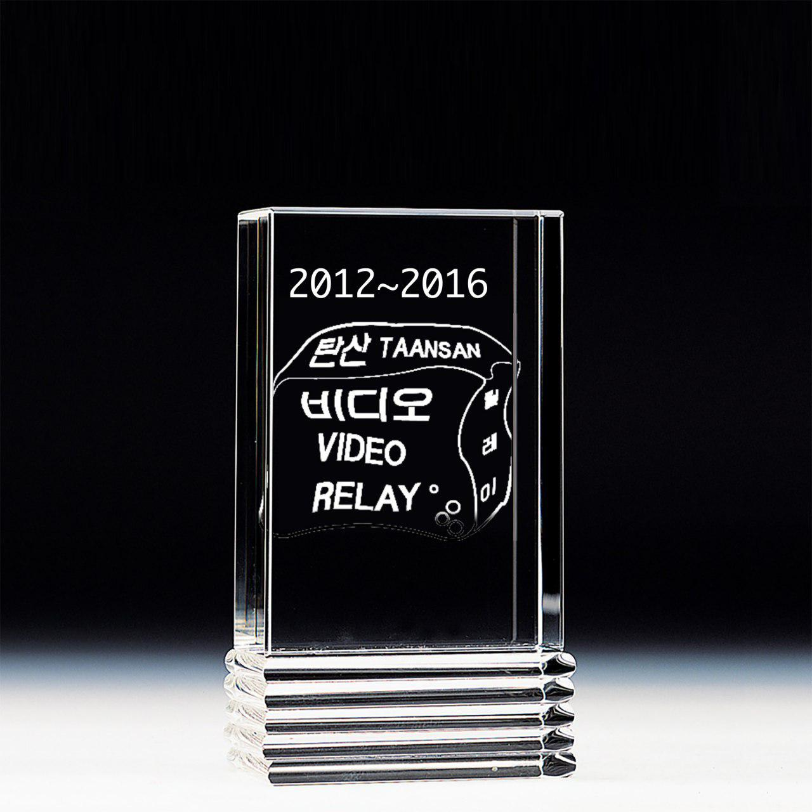

- 비디오 릴레이 탄산이 종료되었습니다. 그간의 응원에 감사드립니다.
Video Relay Taansan has ended. Thank you for your support.
-

-
about
비디오 작업을 가진 젊은 작가들에겐 한가지 공통점이 있다. 파일은 가벼운데 어디서 상영할 곳이 마땅치 않다는 것이다. 영화제처럼 다양한 기회를 준다면 얼마나 좋을까? 공모전을 들여다보면 영상 작업을 5분 이내로 요약하라는 설명이 쓰여있고, 전시를 한다해도 제대로 된 장비 한번 만나기도 어렵다. 몇몇 미디어아트 행사와 하이브리드한 작가가 있지만, 영상 작업의 배급과 유통은 일정 부분 작가에게 넘어와 있는지도 모른다.
<비디오 릴레이 탄산 VIDEO RELAY TAANSAN>은 이러한 현실인식에서 2012년 8월 시작한 비디오 페스티벌이다. 제목이 명시하듯 이 행사는 일회성 스크리닝이 아니다. 작가가 작가를, 비디오가 비디오를 물고 이어진다. 1회의 작가들이 2회의 상영작가들을 소개해주는 방식이다. 2016년 마지막으로 제5회 비디오 릴레이 탄산이 열렸고, 릴레이는 종료되었다.
Video Relay Taansan is a video screening program established by young artists in 2012. It is devised as a channel to promote exchange and mutual support among young artists themselves. For each Video Relay Taansan those artists who participated previously select the participants for the following years and introduce their works. In the summer of 2016, the 5th Video Relay Taansan was held and the relay has ended.
“There is a common denominator among those young artists who make video works: their files are light-weighted, but there are not many places where they can be shown. How great would it be if there are as many and as diverse channels to show our video works as in the case of films, which are shown in many domestic film festivals? Many different competitions require the submission of the five or less minute version of one’s work. When fortunately selected for a group show, one needs to compromise his or her work in terms of light or sound so that his or her work does not disturb other works exhibited nearby. After all, it may not be untrue that the distribution and circulation of video works are to some extent the responsibilities of young artists themselves.”